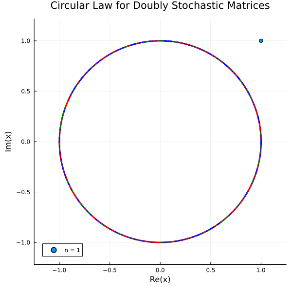

Stochastic Matrices
Stochastic Matrices
RandomMatrix.randStochastic — Function
randStochastic(n; type, norm)n: dimensiontype: defaulttype = 3,3for doubly randStochastic,1for row,2for column stochasticnorm: defaultfalse, if set totrue, the matrix will be normalized by $\sqrt{n}$ (not a typo)
Examples
Generates a 3 by 3 random doubly stochastic matrix
randStochastic(3)
3×3 Matrix{Float64}:
0.132593 0.216041 0.651367
0.484097 0.320777 0.195126
0.261495 0.537825 0.20068Generates a 3 by 3 normalized random row stochastic matrix
randStochastic(3,type = 1)
3×3 Matrix{Float64}:
0.220849 0.146942 0.632209
0.188052 0.26294 0.549008
0.0170714 0.524574 0.458355Generates a 3 by 3 normalized random column stochastic matrix
randStochastic(3,type=2,norm=true)
3×3 Matrix{Float64}:
0.583396 0.608739 0.732921
0.672821 0.078786 0.302657
0.475834 1.04453 0.696473RMT: Circular Law for Doubly Stochastic Random Matrices
Let $X$ be a matrix sampled uniformly from the set of doubly stochastic matrices of size $n \times n$. The empirical spectral distribution of the normalized matrix $\sqrt{n}(X-\mathbf{E} X)$ converges almost surely to the circular law.
For reference, see the paper by Hoi H. Nguyen Random doubly stochastic matrices: The circular law
